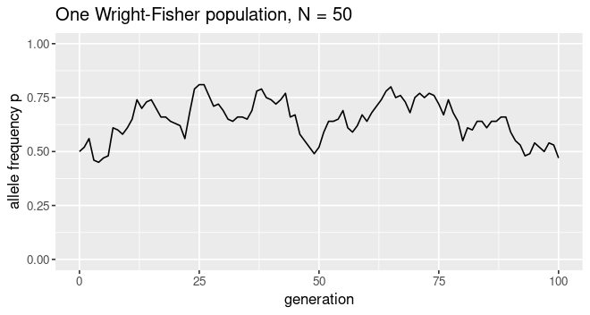
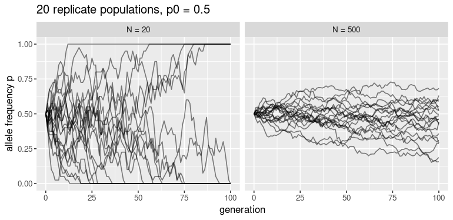

Exercise in R: drift, selection, mutation, migration
Goal
By the end of this exercise you should be able to:
- write a simulation that runs generation after generation with a
forloop; - wrap it in a function
wright_fisher()with drift and selection; - run many replicate populations with
replicate(), reshape the result withpivot_longer, and plot all trajectories; - check theory against simulation: fixation probability = p₀, heterozygosity decay, selection, and the sickle-cell equilibrium.
Before you start
This page builds on the by-hand part of the Exercise, so do that first. You need the packages dplyr, tidyr and ggplot2. No data files are needed: everything is simulated.
Tasks
New idiom today: the for loop. So far each random draw was independent: rbinom(1000, ...) made 1000 families at once. Drift is different: generation t + 1 is drawn from generation t, so we cannot draw all generations at once. A for loop repeats a block of code once for each value of a counter:
for (t in 1:5) {
print(t^2) # runs with t = 1, then t = 2, ..., then t = 5
}The usual pattern is: make an empty vector with numeric(n), set the first element, and fill in element t + 1 from element t inside the loop. As before, set.seed() makes your numbers match the solutions.
library(dplyr)
library(tidyr)
library(ggplot2)One population, one loop
R1. Simulate one Wright–Fisher population of N = 50 diploid individuals (100 gene copies), starting at p = 0.5, for 100 generations. Each generation, the number of A copies is rbinom(1, size = 2 * N, prob = p[t]). Print the first 10 values and the last one, and plot p against generation.
set.seed(1)
N <- 50 # diploid individuals, so 2N = 100 gene copies
gens <- 100
p <- numeric(gens + 1) # an empty vector to fill in
p[1] <- 0.5
for (t in 1:gens) {
p[t + 1] <- rbinom(1, size = 2 * N, prob = p[t]) / (2 * N)
}
round(p[1:10], 2)
p[gens + 1]
ggplot(tibble(generation = 0:gens, p = p), aes(generation, p)) +
geom_line() + ylim(0, 1) +
labs(y = "allele frequency p", title = "One Wright-Fisher population, N = 50")R2. Turn the loop into a function wright_fisher(N, p0, gens, s = 0, h = 0.5). Before the drift step, apply selection with fitnesses wAA = 1 + s, wAa = 1 + hs, waa = 1, using the recursion from the lecture. Test it: (a) neutral drift with N = 20 for 10 generations; (b) selection with s = 0.05 in a huge population (N = 10⁶), where drift is negligible. Check the first step of (b) by hand.
wright_fisher <- function(N, p0, gens, s = 0, h = 0.5) {
w_AA <- 1 + s
w_Aa <- 1 + h * s
w_aa <- 1
p <- numeric(gens + 1)
p[1] <- p0
for (t in 1:gens) {
q <- 1 - p[t]
w_bar <- p[t]^2 * w_AA + 2 * p[t] * q * w_Aa + q^2 * w_aa
p_sel <- (p[t]^2 * w_AA + p[t] * q * w_Aa) / w_bar # selection
p[t + 1] <- rbinom(1, size = 2 * N, prob = p_sel) / (2 * N) # drift
}
p
}
set.seed(2)
round(wright_fisher(N = 20, p0 = 0.5, gens = 10), 3)
round(wright_fisher(N = 1e6, p0 = 0.1, gens = 10, s = 0.05), 3)Many populations
R3. Use replicate to run 20 populations of N = 20 for 100 generations. Each run returns a vector of 101 values, so replicate gives a matrix with one column per population. Turn it into a tibble with one column per population and reshape it to long format with pivot_longer (from Part 6), so that ggplot can draw one line per population. How many populations are fixed, lost or still segregating at generation 100? Then do the same with N = 500 and plot both side by side with facet_wrap.
set.seed(3)
runs <- replicate(20, wright_fisher(N = 20, p0 = 0.5, gens = 100))
dim(runs)
lines20 <- as_tibble(runs, .name_repair = \(x) paste0("pop", seq_along(x))) |>
mutate(generation = 0:100) |>
pivot_longer(-generation, names_to = "population", values_to = "p")
lines20
final <- runs[101, ]
table(fate = ifelse(final == 1, "fixed", ifelse(final == 0, "lost", "segregating")))
set.seed(4)
runs500 <- replicate(20, wright_fisher(N = 500, p0 = 0.5, gens = 100))
range(runs500[101, ])
both <- bind_rows(
lines20 |> mutate(N = "N = 20"),
as_tibble(runs500, .name_repair = \(x) paste0("pop", seq_along(x))) |>
mutate(generation = 0:100) |>
pivot_longer(-generation, names_to = "population", values_to = "p") |>
mutate(N = "N = 500")
)
ggplot(both, aes(generation, p, group = population)) +
geom_line(alpha = 0.5) + facet_wrap(~ N) +
labs(y = "allele frequency p", title = "20 replicate populations, p0 = 0.5")(.name_repair gives the matrix columns the names pop1, pop2, …; \(x) is the short way to write a function, as in Part 1.)
Checking the theory
R4. Run 1000 neutral populations of N = 20, starting at p = 0.2, for 500 generations (long enough for all to fix or lose A), and keep only the final p. What fraction fixed A? Is it close to 0.2? Then start 4000 populations from a single new mutation, p₀ = 1/40. What fraction fixed it?
set.seed(5)
final_p <- replicate(1000, wright_fisher(N = 20, p0 = 0.2, gens = 500)[501])
table(final_p)
mean(final_p == 1)
set.seed(6)
final_new <- replicate(4000, wright_fisher(N = 20, p0 = 1/40, gens = 500)[501])
mean(final_new == 1)R5. Heterozygosity: run 1000 populations of N = 20 from p = 0.5 for 100 generations. Compute H = 2p(1 − p) for every population and generation (R does this element by element on the whole matrix), average over populations with rowMeans, and compare with H₀(1 − 1/2N)t at generations 0, 10, 25, 50 and 100.
set.seed(9)
runs1000 <- replicate(1000, wright_fisher(N = 20, p0 = 0.5, gens = 100))
H <- 2 * runs1000 * (1 - runs1000) # heterozygosity of every population, every generation
het <- tibble(generation = 0:100,
simulated = rowMeans(H),
theory = 0.5 * (1 - 1 / (2 * 20))^(0:100))
het |> filter(generation %in% c(0, 10, 25, 50, 100))R6. Selection and drift together. (a) Run 20 populations with s = 0.05, h = 0.5, p₀ = 0.1 for 200 generations, with N = 500 and with N = 20. Compare with the deterministic curve (use N = 10⁹). What fraction of the N = 20 populations lose the favoured allele? (b) Sickle cell: s = −0.8 and h = −0.2 give wSS = 0.2, wAS = 1.16 and wAA = 1 (the focal allele is HbS). Run 20 populations of N = 1000 from p₀ = 0.02 for 300 generations. Compare the mean final frequency with the equilibrium from the lecture.
set.seed(7)
sel500 <- replicate(20, wright_fisher(N = 500, p0 = 0.1, gens = 200, s = 0.05))
sel20 <- replicate(20, wright_fisher(N = 20, p0 = 0.1, gens = 200, s = 0.05))
det <- wright_fisher(N = 1e9, p0 = 0.1, gens = 200, s = 0.05)
round(det[c(51, 101, 201)], 3)
round(mean(sel500[201, ]), 3)
range(sel500[201, ])
table(sel20[201, ])
set.seed(8)
sickle <- replicate(20, wright_fisher(N = 1000, p0 = 0.02, gens = 300, s = -0.8, h = -0.2))
round(mean(sickle[301, ]), 3)
w_AA <- 1 - 0.8; w_Aa <- 1 + 0.16; w_aa <- 1
(w_Aa - w_aa) / (2 * w_Aa - w_AA - w_aa)Solutions
Run with Rscript --vanilla from the unit folder. Messages from loading packages are not shown.
R1.
[1] 0.50 0.52 0.56 0.46 0.45 0.47 0.48 0.61 0.60 0.58
[1] 0.47
p moves by a few percent each generation, sometimes more (0.48 → 0.61 in one step). With 100 gene copies, the standard deviation of one step at p = 0.5 is √(0.25/100) = 0.05. After 100 generations this population happens to be back near where it started; another seed would end elsewhere.
R2.
[1] 0.500 0.425 0.475 0.500 0.425 0.550 0.425 0.325 0.400 0.400 0.400
[1] 0.100 0.102 0.104 0.106 0.109 0.112 0.114 0.117 0.119 0.121 0.124- With 40 copies, p jumps in steps of 1/40 = 0.025. (b) First step by hand: w̄ = 0.01 × 1.05 + 0.18 × 1.025 + 0.81 × 1 = 1.0050; p′ = (0.01 × 1.05 + 0.09 × 1.025)/1.0050 = 0.10275/1.0050 = 0.1022, printed as 0.102. In a population of a million, drift is negligible and p rises smoothly by about 0.002 per generation.
R3.
[1] 101 20
# A tibble: 2,020 × 3
generation population p
<int> <chr> <dbl>
1 0 pop1 0.5
2 0 pop2 0.5
3 0 pop3 0.5
4 0 pop4 0.5
5 0 pop5 0.5
6 0 pop6 0.5
7 0 pop7 0.5
8 0 pop8 0.5
9 0 pop9 0.5
10 0 pop10 0.5
# ℹ 2,010 more rows
fate
fixed lost
5 15
[1] 0.157 0.683
With N = 20, all 20 populations have fixed (5) or lost (15) A by generation 100. The split 5:15 rather than 10:10 is chance: with 20 populations and P(fix) = 0.5, a split this uneven or more happens in about 4% of experiments. With N = 500 none is fixed or lost; the final frequencies range from 0.16 to 0.68.
R4.
final_p
0 1
777 223
[1] 0.223
[1] 0.02675Every population ended at 0 or 1. 22.3% fixed A, close to p₀ = 0.2 (the standard error of a fraction of 1000 is √(0.2 × 0.8/1000) = 0.013, so 0.223 is within 2 SE). For a new mutation, 2.7% fixed it, against 1/40 = 2.5%.
R5.
# A tibble: 5 × 3
generation simulated theory
<int> <dbl> <dbl>
1 0 0.5 0.5
2 10 0.393 0.388
3 25 0.271 0.266
4 50 0.144 0.141
5 100 0.0398 0.0398The simulated mean heterozygosity follows (1 − 1/40)t closely: 0.39 after 10 generations, 0.14 after 50, 0.04 after 100. Individual populations jump around, but their average loses variation at exactly the predicted rate.
R6.
[1] 0.275 0.563 0.936
[1] 0.888
[1] 0.661 1.000
0 1
18 2
[1] 0.14
[1] 0.1428571- Deterministic: p = 0.275 after 50, 0.563 after 100 and 0.936 after 200 generations. With N = 500 the populations follow it with some scatter (mean 0.888, range 0.66 to 1.00; none lost). With N = 20, 18 of 20 populations lost the favoured allele: drift beats weak selection in small populations (4Ns = 4), and an allele starting at 4 copies is easily lost by chance.
- The 20 populations average 0.14 after 300 generations, matching the equilibrium q̂ = 0.16/1.12 = 0.143. Heterozygote advantage holds HbS at a stable intermediate frequency in a large population.
Where this leads
The for loop is the general tool for anything that depends on its own past: population sizes, epidemics, tumour growth. In Complex traits we go back to vectorised R and to lm, to estimate heritability from family data.